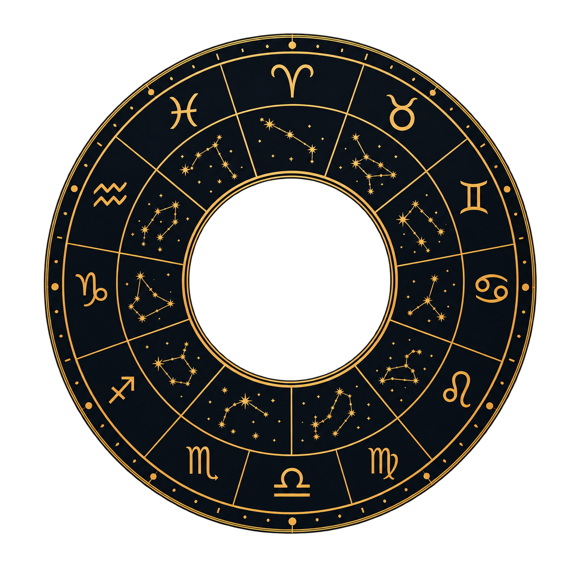

Натальная карта, таро-расклад, совместимость и ежедневный гороскоп — прямо в Telegram. Первый разбор всегда бесплатный.

Каждый раздел строится на точной дате, времени и месте рождения — вашем или питомца.
Полный разбор характера питомца по дате, времени и месту рождения — сильные стороны, склонности, чего ждать в поведении.
от 25 ⭐Задайте вопрос о питомце — или о себе, если питомца пока нет — и получите расклад с трактовкой карт.
от 15 ⭐Насколько гармоничен союз питомца с хозяином или двух питомцев между собой — по натальным картам обоих участников.
от 20 ⭐Подписка на короткий персональный прогноз для питомца каждое утро — настроение дня, активность, совет.
подпискаЕщё не завели питомца? Бот подскажет подходящий вид и породу на основе вашей собственной натальной карты.
бесплатноКороткий квиз о повседневных привычках питомца — ответы копятся и делают будущие разборы точнее.
бесплатноНажмите «Начать в Telegram» — бот встретит вас в главном меню, установка ничего не требует.
Укажите имя, вид, породу, дату, время и место рождения — это займёт пару минут.
Выберите натальную карту, таро, совместимость или гороскоп — первый разбор бесплатный.
Первый разбор в каждом разделе — бесплатно. Дальше — по мере необходимости.
Пакеты пополнения: 50 или 100 ⭐, либо безлимитная подписка на месяц за 199 ⭐.
Telegram-бот, который строит натальную карту питомца по дате, времени и месту рождения, делает таро-расклады, рассчитывает совместимость и ведёт ежедневный гороскоп — прямо в мессенджере, без установки приложений.
Первый разбор в каждом разделе бесплатный. Дальнейшие запросы — от 15 до 25 ⭐ за услугу, либо безлимитный пакет на месяц за 199 ⭐.
Да. Бот подберёт подходящий вид и породу питомца на основе вашей собственной натальной карты, а также может сделать таро-расклад для вас лично.
На основе точной даты, времени и места рождения — с использованием библиотеки Swiss Ephemeris, той же основы, что применяется в профессиональной астрологии для людей.
Telegram ID хранится в анонимизированном виде, данные не передаются третьим лицам. Подробности — в политике конфиденциальности.
Да, первый ежедневный гороскоп и первая натальная карта для любого питомца — кота, собаки, хомяка, попугая — бесплатны. Дальше подписка на гороскоп оплачивается через Telegram Stars.
Да. Раздел «Совместимость» сравнивает натальные карты двух питомцев любых видов — кошки и собаки, хомяка и кота — или питомца с хозяином, и показывает, где будет гармония, а где возможны трения.
Да, можно задать конкретный вопрос о поведении, здоровье или настроении питомца — карты дадут образный ответ. Таро доступно и для самого хозяина, если питомца пока нет.
Знак зодиака питомца определяется по дате рождения так же, как у человека — рассчитывается автоматически при построении натальной карты в боте.
Бот строит натальную карту владельца по дате, времени и месту рождения и бесплатно подсказывает подходящий вид и темперамент питомца, а за доплату — кличку, гармоничный знак и удачный период для его появления в семье.
Да, на выбранную дату или месяц бот показывает благоприятные дни для груминга, визита к ветеринару, активных игр и спокойного отдыха питомца.
«Душа в душу» — это гороскоп для питомцев, натальная карта кота и собаки, астрология для животных, таро-расклад для питомца, совместимость знаков зодиака кошки и собаки, лунный календарь для питомцев и подбор питомца по гороскопу владельца. Всё это работает прямо в Telegram-боте @SoulPetBot, без установки приложений, на основе расчётов Swiss Ephemeris.
Откройте бота и добавьте питомца — натальная карта будет готова через пару минут.
Начать в Telegram →